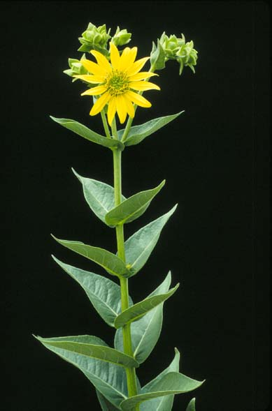
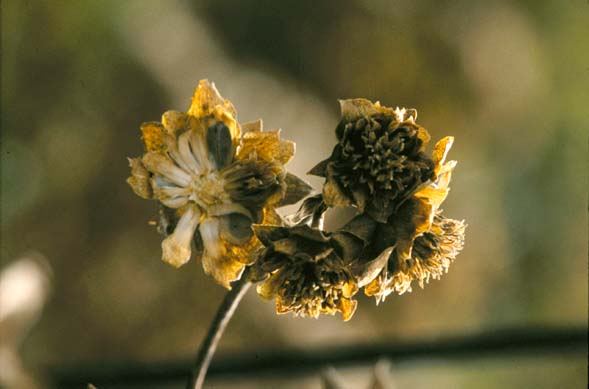
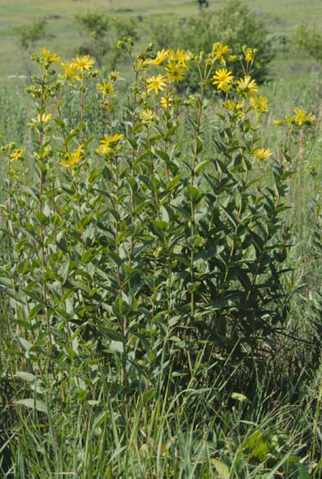
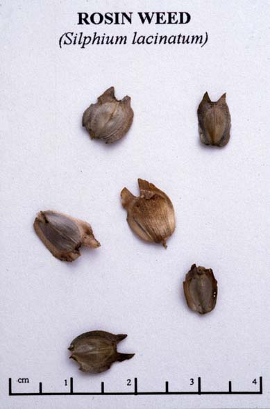

Silphium Integrifolium
Family: Asteraceae
Rosin Weed
Swink/Wilhelm #5



Click to view larger photo
FLOWERING: July - September
SEED TIMING: Mid-September to mid-October
HABITAT: Prairies
DIAGNOSTIC FEATURES: 2 - 6 feet. Sunflower like flowers. Large, coarse plants with rough, stalkless, paired leaves, with or without teeth.
TO PICK: Sunflower-like seeds form in rays only. Turn dry and brown when ripe. Best to pick at earlier stage since it is eaten perhaps by deer. Pick entire head.